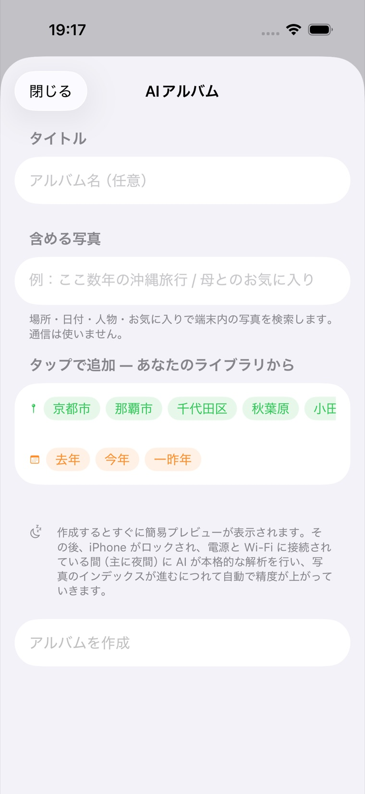

MosaicPhotos ヘルプ / AI アルバムと意味検索
AI アルバムと意味検索
「どんな写真か」を言葉で書くだけでアルバムを作れます。解釈も検索も端末の中（オンデバイス）で 行われ、通信は使いません。端末と Dropbox の両方の写真が対象です。
作りかた

ホームの「AI アルバム」の ＋ から作成画面を開き、
- タイトル（アルバム名）
- 含める写真（どんな写真かを自由な文章で）
を入力して アルバムを更新 を押します。あとで … から編集もできます。
入力した条件は“生きたアルバム”として残り、写真の取り込みが進むほど中身が増えていきます。
どんな言葉が使える？
むずかしい呪文は不要です。日本語でも英語でも、ふつうの言い方で書けます。たとえば:
- 被写体・場面 … 「海と夕日」「ラーメン」「桜」「犬」「夜景」「ホワイトボード」
- 人 … 「家族」「子供」（端末の写真アプリで名前を付けた人物名も使えます）
- 場所 … 「京都」「沖縄」（市区町村・国名）
- 日付 … 「2023年」「ここ2年以内」「先月」のような言い方も解釈します
- 組み合わせ … 「京都か奈良の家族の写真」「お気に入りの夜景」「スクショは除く」
内容（被写体）の検索は決まったキーワード一覧に縛られません（オープン語彙）。
思いついた言葉でそのまま試せます。うまく絞れないときは言葉を足したり言い換えたりしてみてください。
仕組み（ざっくり）
- 入力文はアルバム作成時に一度だけオンデバイス AI が解釈します（日付・場所・人物などの条件と、 探したい内容に分解）。
- 各写真には背景で 3 種類のインデックスが付きます：シーンタグ（何が写っているかの キーワード・約1,300種類）→ 内容の埋め込み（意味の照合用）→ AI 説明文（写真を一文で 説明・対応構成のみ）。
- 検索はタグの一致・意味の近さ・地名/人名の一致を組み合わせ、最後にオンデバイス AI が候補ごとの 証拠（タグ・顔の数・説明文）を読んで合っているか審査します。「人が写っていない」のような 除外は、顔検出の実測とタグで確実に守ります。
- インデックス付けは充電中で操作していないとき（ロック中も）に自動で進みます。 初回は枚数が多いほど数日かかりますが、進むほど検索・アルバムの精度が上がります。 「今すぐ処理」で即開始もできます（設定参照）。
写真ごとの「検出タグ」と「AI による説明」
写真を全画面で開いて情報を見ると、検出タグの欄が常に表示されます（インデックス前は 「タグはまだありません」と出ます）。タグは検索・アルバム選定と同じデータなので、 「なぜこの写真が選ばれたか」の手がかりになります。AI 説明文が生成済みの写真では AI による説明も表示されます。
除外つきのアルバム（例:「人が写っていない…」）は、まだインデックスの無い写真を
あえて入れません（確認できないため）。最初は少なく見えても、タグ付けが進むにつれて
自動で増えていきます。
AI 検索・タグは、アプリに AI モデルが同梱されている場合に有効です。未同梱の構成では、
日付・場所・人物などの条件による絞り込みは使えますが、内容の意味検索とタグは無効になります。